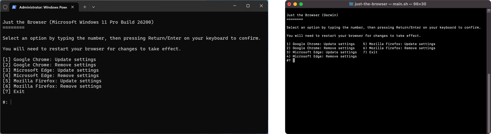

Modern web browsers are increasingly focused on features beyond the core browsing experience, many of which just end up as distractions. Chrome gives you coupon codes while shopping. Microsoft Edge fills the New Tab page with clickbait garbage articles from MSN, and previously tried to sell you loans.
The generative AI era has made this even worse. Google’s Gemini AI is now everywhere in Chrome, and the AI Search mode that told people to eat rocks and cook with glue is now prominently featured in the address bar. Edge also has countless Copilot AI integrations, and Firefox is getting an AI browsing mode. When these features aren’t using cloud AI services, Chrome, Edge, and Firefox have their own local AI models that eat up system resources.
Call me old fashioned, but I want my web browser to be just be a browser. I don’t want shopping integrations, or AI agents taking over my cursor, or local AI models running constantly in the background just to reshuffle my tabs. I shouldn’t have to resort to Safari or half-working Firefox forks for that.
My solution is Just the Browser.
Just the Browser helps you remove AI features, telemetry data reporting, sponsored content, product integrations, and other annoyances from desktop web browsers. It accomplishes this with group policy configurations—hidden settings provided by Google, Mozilla, and Microsoft for businesses and other large organizations. Those options are how IT departments can lock down certain features for computers at work or school, but now they can be a force for good.
You know that “AI kill switch” that Firefox will eventually add? It’s already a hidden setting that Just the Browser can enable for you. It will also turn off all Gemini and AI Mode features in Chrome. In Microsoft Edge, it turns off all Copilot features, advertisements for Adobe Reader, articles and ads on the New Tab page, automatic data import from other browsers, and much more.
Importantly, all that functionality remains disabled, which isn’t always the case with user-accessible settings. For example, Microsoft Edge likes to revert your New Tab page settings after a while, so you see those garbage MSN articles again. That does not happen with group policy settings.
Everyone has their own definition of “bloatware” and “spyware,” so the default configurations are limited in scope. They don’t go full minimalist, nor do they install extensions to boost privacy and security.
Just the Browser includes browser configurations for Windows, Linux, and macOS, along with guides for installing them. The documentation also explains each setting that is changed. The best part is the setup script, which can install or delete the configuration files for you in just a few clicks. They are regular Bash and PowerShell scripts, so they work on everything from x86 Fedora Linux to ARM Windows 11.

The entire project is open-source on GitHub, including the configuration files, documentation, scripts, and website. The configuration settings used by web browsers will change over time, and I’m hoping others will help me stay on top of changes and add support for more browsers.
I know the most common response to this project will be “why not switch to [x] browser?” It’s true that LibreWolf, SeaMonkey, fresh Chromium builds, and various other Firefox forks are closer to a minimal browsing experience. Vivaldi would also fit the bill after changing a few settings—as far as I know, it doesn’t quietly turn features back on like Edge does.
However, most of those browsers have downsides. LibreWolf is one of the popular Firefox forks at the moment, but the project’s own FAQ promises “no expectations” of continued support, and it doesn’t have signed macOS builds. They don’t always offer data synchronization with accounts or DRM support. When a zero-day security vulnerability is found in Chromium or Firefox, it can sometimes take a while to trickle down to the various forked browsers.
With the custom configurations in Just the Browser, you can keep using mainstream web browsers with all of their upsides—like fast updates, robust platform support, account synchronization support, and DRM video playback—but without many of the usual annoyances. The best of both worlds.
You can visit justthebrowser.com to run the setup script, read through the documentation, and download the configuration files. I hope this will be a useful resource for years to come.